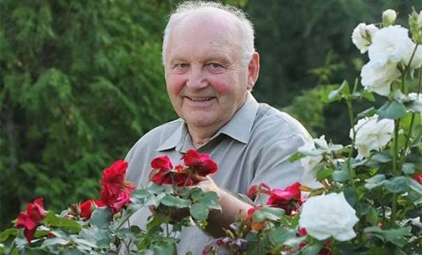

Naujas klausos atkūrimo metodas, kuris griauna klausos aparatų rinką? Keletas žymių ENT specialistų patvirtina šį faktą be jokių abejonių. Kartu su natūralios makromolekulinės formulės sukūrimu atėjo ilgai lauktas atradimas, padedantis atkurti gerą klausą.
Jau daugiau nei 14 000 šio metodo vartotojų per 28 dienas sugebėjo atkurti klausos ląsteles. Iš esmės jie atkūrė klausos aštrumą 20-25 metų amžiaus. Net ir tie, kuriems grėsė visiškas kurtumas. Kaip tai įmanoma?
Ponas Jonas Brumaru (molekulinės biologijos ekspertas) nusprendė išgelbėti savo mamą nuo progresuojančio kurtumo ir atkurti gerą klausą – tai buvo revoliucijos laringologijos srityje pradžia. Profesorius po 11 mėnesių laboratorinių tyrimų sukūrė natūralus, saugus ir paprastas naudoti klausos stiprinimo formulė.
Profesionalūs žurnalai šią priemonę jau pavadino „novatorišku laringologijos pasiekimu“, o specialistė buvo nominuotas geriausio klausytojo pasirinkimo apdovanojimui. Dėl formulės veikimo net žmonės, turintys sunkų klausos praradimą, gali atsinaujinti klausos ląstelės, atkuria natūralų gebėjimą girdėti ir gali būti atleista nuo poreikio nešioti klausos aparatą.
Profesionalūs žurnalai šią priemonę jau pavadino „novatorišku laringologijos pasiekimu“, o specialistė buvo nominuotas geriausio klausytojo pasirinkimo apdovanojimui. Dėl formulės veikimo net žmonės, turintys sunkų klausos praradimą, gali atsinaujinti klausos ląstelės, atkuria natūralų gebėjimą girdėti ir gali būti atleista nuo poreikio nešioti klausos aparatą.
"Klausos aparatai yra švaistomi pinigai!" Kodėl taip yra?
Šiuos žodžius jau patvirtina daugiau nei 14 000 patenkintų klausos atkūrimo makromolekulinės formulės vartotojų, kurie jau atsisakė savo klausos aparatų. Štai kodėl nusprendėme išsamiai ištirti klausos aparatus. O tiksliau – patikrinti, kokie yra jų trūkumai ir su kuo turi kovoti kasdien šiais prietaisais besinaudojantys kurtieji. Štai rezultatai:
Brangus klausos aparatas
Įrenginio kaina svyruoja nuo 2 iki 12 tūkstančių litų, ir tai nėra vienkartinė kaina. Taip pat reikalingos baterijos, kurių metinė kaina viršija 400 ! Net jei kas nors leidžia sau lengvai atiduoti šiuos pinigus, tai neišvengia kitų šio įrenginio trūkumų.
Sukelia gėdą ir diskomfortą
Klausos aparatus nešiojantys žmonės kenčia, nes laikomi neįgaliais. Jiems tiesiog gaila, kai žmonės gatvėje su gailesčiu žiūri į juos ir sako: „Kas tau ant ausų?
Jie skleidžia varginantį girgždėjimą
Klausos aparatus naudojantys žmonės skundžiasi mirtina garso kokybe. Prietaisas skleidžia nemalonius garsus, sukeliančius dirglumą ir stresą.
Sukelia infekciją, kuri apsunkina kurtumą.
Prietaise gali atsirasti grybelių, kurie sukelia ausiai pavojingas infekcijas. Todėl jie dar labiau susilpnina klausą.
Garsą sustiprina tik dėvėtas
Prietaisas turi būti nuimamas sąlyčio su vandeniu momentu, pavyzdžiui, prieš maudantis. Jis taip pat prarandamas naktį. Tai neleidžia visam laikui atkurti klausos.
Štai kodėl Jono Brumaru atliktas makromolekulinis atkūrimas yra tikras proveržis kovojant už gerą klausą.
Nešioti klausos aparatai dirbtinai sustiprina garsus. Tada kaip metodas Brumaru atnaujina klausos ląsteles, atkuria natūralų gebėjimą girdėti be aparato. Šiame gaminyje esantys ingredientai pasižymi stipriomis regeneracinėmis savybėmis. Kasdien vartojant šias kapsules, klausos aštrumas atstatomas net ir sunkiai klausos praradusiems žmonėms.
Klausos aparatai juos nešiojant dirbtinai sustiprina garsus. Tada kaip metodas Brumaru atnaujina klausos ląsteles, atkuria natūralų gebėjimą girdėti be aparato. Šiame gaminyje esantys ingredientai pasižymi stipriomis regeneracinėmis savybėmis. Kasdien vartojant šias kapsules, klausos aštrumas atstatomas net ir sunkiai klausos praradusiems žmonėms.
Dabar kiekvienas gali atkurti 100% klausą
Formulė jau parduodama mažmeninėje prekyboje pavadinimu . Šio įrankio naudojimas yra visiškai saugus organizmui, tai įrodo tolesni tyrimai Vokietijos tyrimų centre Štutgarte. Šie tyrimai taip pat parodė, kad atkūrimo rodikliai viršija 98%. Dėl to žmonės į amžiaus 38-93 metų vos per 28 dienas pasiekė įspūdingų rezultatų kovoje su klausos praradimu. Nepriklausomai nuo jų amžiaus, klausos sutrikimų priežasties ir trukmės.
Produktas mažmeninėje prekyboje parduodamas pavadinimu . Jo naudojimas yra visiškai saugus organizmui, kaip rodo tolesni tyrimai Vokietijos tyrimų centre Štutgarte. Šie tyrimai taip pat parodė, kad atkūrimo rodikliai viršija 98%. Dėl to žmonės į amžiaus 38-93 metų vos per 28 dienas pasiekė įspūdingų rezultatų kovoje su klausos praradimu. Nepriklausomai nuo jų amžiaus, klausos sutrikimų priežasties ir trukmės.
Įrodytas veiksmingumas
Šie žmonės išvalė ausies kanalą iškart panaudoję formulę. Dėka jo jie pagerino savo klausą iki 50% ir pradėjo girdėti pilnesnį garsų spektrą didesnėse erdvėse. Vėlesnėmis dienomis šie žmonės tapo jautresni žmonių kalbai, dėl to jie pradėjo aiškiau girdėti pokalbius net gatvės triukšme. Po to jie atsikratė galvos skausmo ir spengimo ausyse, kuriuos sukėlė ausies kanalo užterštumas.
Dėl to jie sumažino smegenyse esančių klausos centrų apkrovą iki 80% ir atkūrė 3 kartus daugiau energijos. Bet tai dar ne viskas. Po 28 dienų tyrimo dalyviai vienbalsiai sutiko, kad jų klausa pagerėjo. Šiandien girdžiu lygiai tą patį kaip 20-25 metų amžiaus!
Dokumentuotas priemonės poveikis kalba pats už save:
klausa 50% geresnė
klausos regeneracija – aiškus kalbos supratimas
šnabždesio ir žemų tonų girdimumas tapo 15 kartų geresnis
padidino klausos aštrumą iki 20-25 metų
1 savaitė
2 savaitė
3 savaitė
4 savaitė
klausa 50% geresnė
klausos regeneracija – aiškus kalbos supratimas
šnabždesio ir žemų tonų girdimumas tapo 15 kartų geresnis
padidino klausos aštrumą iki 20-25 metų
1 savaitė
2 savaitė
3 savaitė
4 savaitė
Savaitė 1 - klausa padidėjo 50%, geresnė klausa per atstumą
2 savaitė - negyvų ir pažeistų klausos ląstelių regeneracija, viską girdime aiškiai
3 savaitės -15 kartų pagerėjo šnabždesių ir žemų tonų girdimumas, sumažėja spengimas ausyse
Ponas Ioanas Pintea (72 m.) iš Varšuvos vienas pirmųjų Lenkijoje pradėjo naudoti :

„Jau seniai, po 40 metų, turėjau problemų su klausa. Maniau, kad tai normalu – senstu, todėl girdžiu blogiau. Tačiau po kelerių metų nustojau suprasti, kas man buvo sakoma. Man visada buvo gėda vėl paklausti: ką? Ką? Ką? Turėjau net klausos aparatą. Daviau už jį turtus, tai yra beveik 2 pensijas, bet ir tai nepadėjo! Nenorėjau darytis operacijos. Kaip pjauti skalpeliu į ausį? Man pasisekė, kad laiku sužinojau apie . Dabar žinau, kad jei nebūčiau naudojusi šios priemonės, būčiau padariusi gyvenimo klaidą. Buvau beveik kurčia, bet prireikė 4 savaičių, kad išgirsčiau net šnabždesį be klausos aparato! Galiu be problemų žiūrėti televizorių, klausytis radijo ir kalbėtis telefonu. Galiausiai išgirstu žmones gatvėje, parduotuvėje ar autobuse. Labai malonu vėl girdėti parke medžių ir paukščių čiulbėjimą. Labai ačiū!
Julija Slavienė
(72 m.)
Pirmasis lietuvė, panaudojusi
i
Klausos problemų turėjau seniai, po 40 metų. Maniau, kad tai normalu – senstu, todėl girdžiu blogiau. Tačiau po kelerių metų nustojau suprasti, kas man buvo sakoma. Man visada buvo gėda vėl paklausti: ką? Ką? Ką?
Turėjau net klausos aparatą. Daviau už jį turtus, tai yra beveik 2 pensijas, bet ir tai nepadėjo! Nenorėjau darytis operacijos. Kaip pjauti skalpeliu į ausį?
Man pasisekė, kad laiku sužinojau apie . Dabar žinau, kad jei nebūčiau naudojusi šios priemonės, būčiau padariusi gyvenimo klaidą. Buvau beveik kurčia, bet prireikė 4 savaičių, kad išgirsčiau net šnabždesį be klausos aparato!
Galiu be problemų žiūrėti televizorių, klausytis radijo ir kalbėtis telefonu. Galiausiai išgirstu žmones gatvėje, parduotuvėje ar autobuse. Labai malonu vėl girdėti parke medžių ir paukščių čiulbėjimą. Labai ačiū!
Kam išleisti daug pinigų nereikalingiems klausos aparatams, kai klausą galima atkurti natūraliai ir pigiai?
„“ veiksmingumą įrodė Vokietijos tyrimų centras Štutgarte.
Geros naujienos yra tai, kad galite gauti akcijų, vos už 159 . Nuolaida taikoma visiems žmonėms, gimusiems po 1925 m. Specialus pasiūlymas galioja iki 26.04.2022. Jūs galite gauti produktas per šia svetainę žemiau.
Skaitykite komentarus prie straipsnio „Klausos aparatų eros pabaiga! Inovatyvus terapijos metodas...“
Teodoras
26.04.2022
Ir sako, kad lietuviams nesiseka pasauliniu mąstu. Išskirtinis Jono Brumaru pasiekimas. Šaunuolis!
Karina
26.04.2022
Pati esu naudojusi , gavau su nuolaida ir tikrai labai mazai mokėjau. Man pavyko pagerinti savo klausą! Jaučiuosi kaip naujas žmogus. Rekomenduoju iš visos širdies
Miglė
26.04.2022
Čia kažkas ne taip. Kodėl būtent per 28 dienas jis taip gerai padeda? Skamba kaip sukčiavimas
Sofija
26.04.2022
@Migle, kai tyrimų institutas atlieka klinikinį produkto tyrimą, laikui bėgant paskelbia rezultatus. Tai yra tyrimo gairės. Vidutinis bandomosios grupės rezultatas buvo toks, koks buvo matomas po 28 dienų!!! Tai įspūdingas efektas.
Michailas
26.04.2022
Brangūs. Pasakysiu, kad su klausos aparatais kovojau beveik 6 metus. Ilgus metus trukę statybos darbai padarė savo, ir klausa ėmė silpti. Iš viso už klausos aparatus sumokėjau 5000 lėjų, tai nėra tiek daug, nors su pensija tai gana stipriai nukentėjo į šeimos biudžetą. Ir šie aparatai mane kankino, nes teko juos užsidėti, nusiimti, prižiūrėti. Anūkai bijojo manęs. Prieš tris savaites gavau šią priemonę iš dukros ir išmečiau klausos aparatus. Kol kas klausa man sugrįžo!! Nežinau, ar tai tinka visiems, bet man labai padėjo! Verta pabandyti
Andrius
26.04.2022
Aš taip pat naudojau ir iš jo gavau išskirtinę naudą. Naudoju tik dvi savaites, bet jau girdžiu du kartus geriau. Klausos aparato nebenaudoju. Pagaliau galiu gyventi kaip normalus žmogus
Marija
26.04.2022
Atėjusi į šį puslapį nesitikėjau tokių stebuklų. Aš vis tiek turiu išbandyti šias kapsules. Nebegaliu pakęsti šio baisaus klausos aparato. Slepiu tai už plaukų, bet tu vis tiek matai, ir visada dėl šitų zvimbimų ir spragtelėjimų gali išprotėti. Dieve, pagaliau atsikračiau šito, urra
Viktorija
26.04.2022
Dirbu valstybinėje įstaigoje ir visada priimu lankytojus. Nuolat jų ko nors klausiu, jausdamasi gėda. Juk viršininkas jau norėjo mane atleisti, tai nusipirkau šitą baisią mašiną su iš ausies kyšomu laidu. Bet turėjau gerai atrodyti. Nes aš dar nesu toks senas, bet ir nebe jaunas. Keletą kartų sutikau ką nors, bet man buvo gėda, nes nešioju klausos aparatą. Pagaliau pakeičiau savo gyvenimą, ačiū, ačiū!!!! :)
Mykolas
26.04.2022
@Viktorija, šiais atvejais nemanau, kad tai svarbu. Bet sėkmės, pajusite milžinišką skirtumą, kai baigsite kursą su . Turėjau sunkų klausos sutrikimą, todėl prireikė pusantro mėnesio, kol atstačiau klausą iki 100 proc. Bet aš laimingas. Pagaliau radau gerą darbą ir susipažinau su žmonėmis. Linkiu tau to paties. Sėkmės!
Agnė
26.04.2022
Mano mama jau senyvo amžiaus, todėl turiu klausimą tiems, kurie vartojo, kiek jums metų, vyresniems nei 80 metų, ar turite giminių/pažįstamų? Noriu sužinoti, ar mano mama turi galimybę. Negaliu su ja sutarti, ji negirdi telefono. Kaimynai, žiūrinti televizorių, beldžiasi į sienas. Košmaras, bet man jos labai gaila. Atsakykite prašau. Agnė
Deivydas
26.04.2022
@Agne, aš paveldėjau klausos problemas ir mano tėvas, kuriam 93 metai, taip pat kenčia nuo jų. Jo klausa pagerėjo po trijų savaičių naudojimo. Nustojau dėl jo taip jaudintis, jis nebėra kurčias ir viską daro pats. Taigi aš rekomenduoju jūsų mamai tai išbandyti.
Agnė
26.04.2022
@Deivydai, labai ačiū už atsakymą. Tokiu atveju padovanosiu mamai
Andrius
26.04.2022
Naudojau ir as, klausa atjauninau bent 15 metu :) Rekomenduoju is visos sirdies
Екатерина
26.04.2022
Labai norėčiau jį naudoti, bet bijau, nes nežinau, ar ši priemonė tiks. Aš jau daug išleidau neveiksmingiems metodams.
Tomas
26.04.2022
Esu jauna (36m.) ir klausa nesiskundžiu, bet dirbu su garso sistemomis, tad kaip profilaktikos priemonę naudoju . Nes tai taip pat padeda išvengti klausos praradimo. Taigi, jei kas nors abejoja, labai rekomenduoju


Teodoras
Ir sako, kad lietuviams nesiseka pasauliniu mąstu. Išskirtinis Jono Brumaru pasiekimas. Šaunuolis!